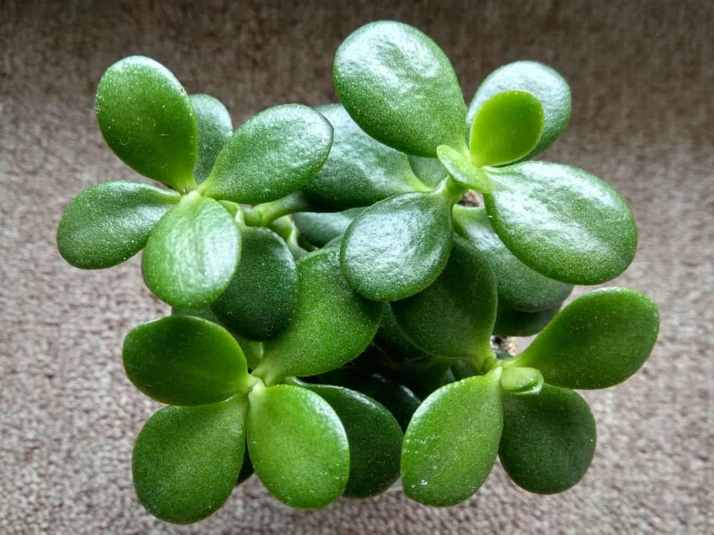

Родиной комнатного растения толстянки является Южная Африка, а точнее, ее западная часть, где она в весьма значительном количестве произрастает в естественных условиях.
До недавнего времени считалось, что родиной происхождения цветка толстянки является только Южная Африка, однако несколько десятилетий назад ученые установили, что часть видов впервые появилась на Мадагаскаре. Что же касается привычного комнатного растения денежного дерева, то его родина происхождения именно Южная Африка, откуда крассула и распространилась, сначала в Северную Америку и азиатские страны, а потом и дальше.
Crassula arborescens или Толстянка Древовидная, в народе известна под названием "денежное дерево". Такое необычное название толстянка получила потому, что ее толстые округлые листочки по внешнему виду похожи на монеты.
В народе с давних пор верят в то, что если в доме поселить толстянку, то в него войдет удача, счастье и благосостояние. Денежное дерево способно устранять негативную энергию и притягивать все хорошее. Впервые такое понятие появилось в Древнем Китае, в эпоху правления империи Хань.
Более двухсот видов толстянки произрастают в Южной Африке; значительное число видов распространено в Тропической Африке и на Мадагаскаре, несколько видов встречается на юге Аравии. Растения этого рода распространены очень широко, но преимущественно в Южном полушарии.